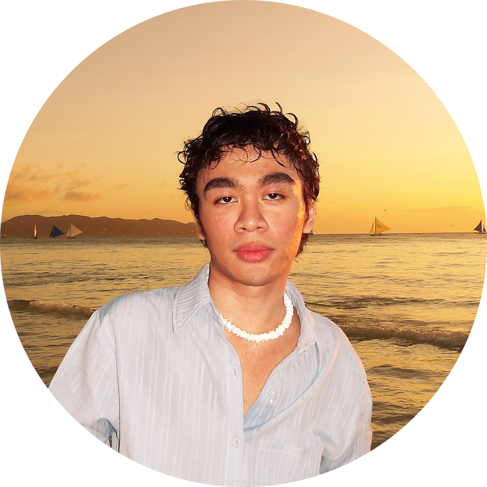
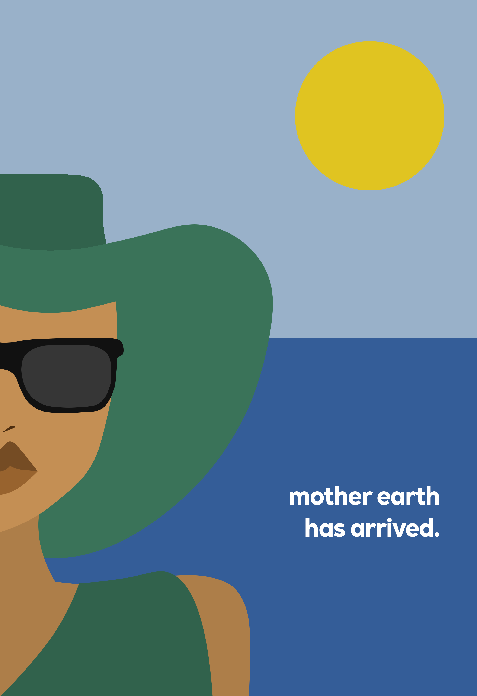
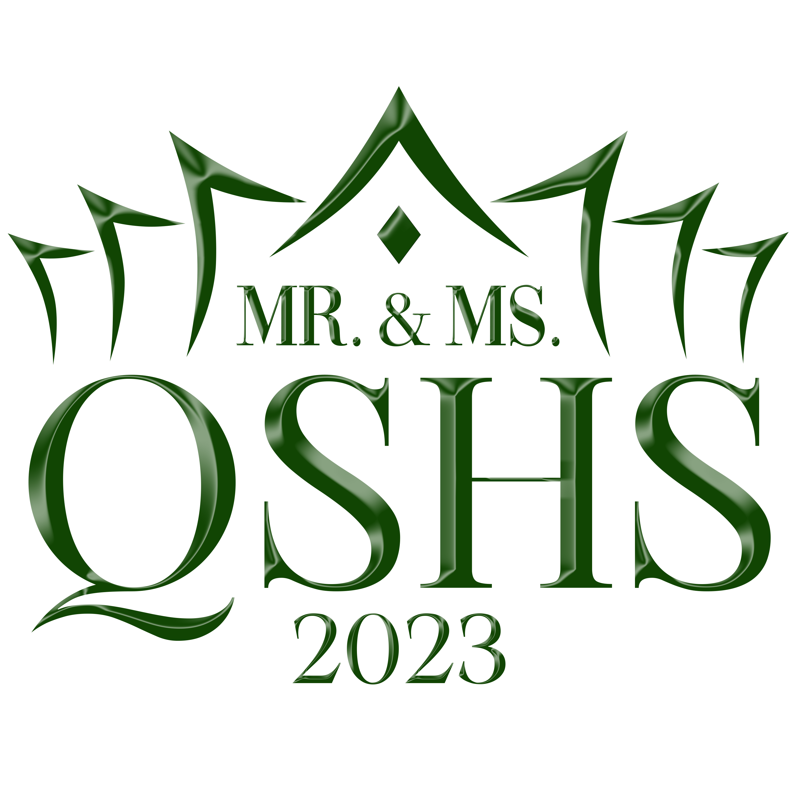
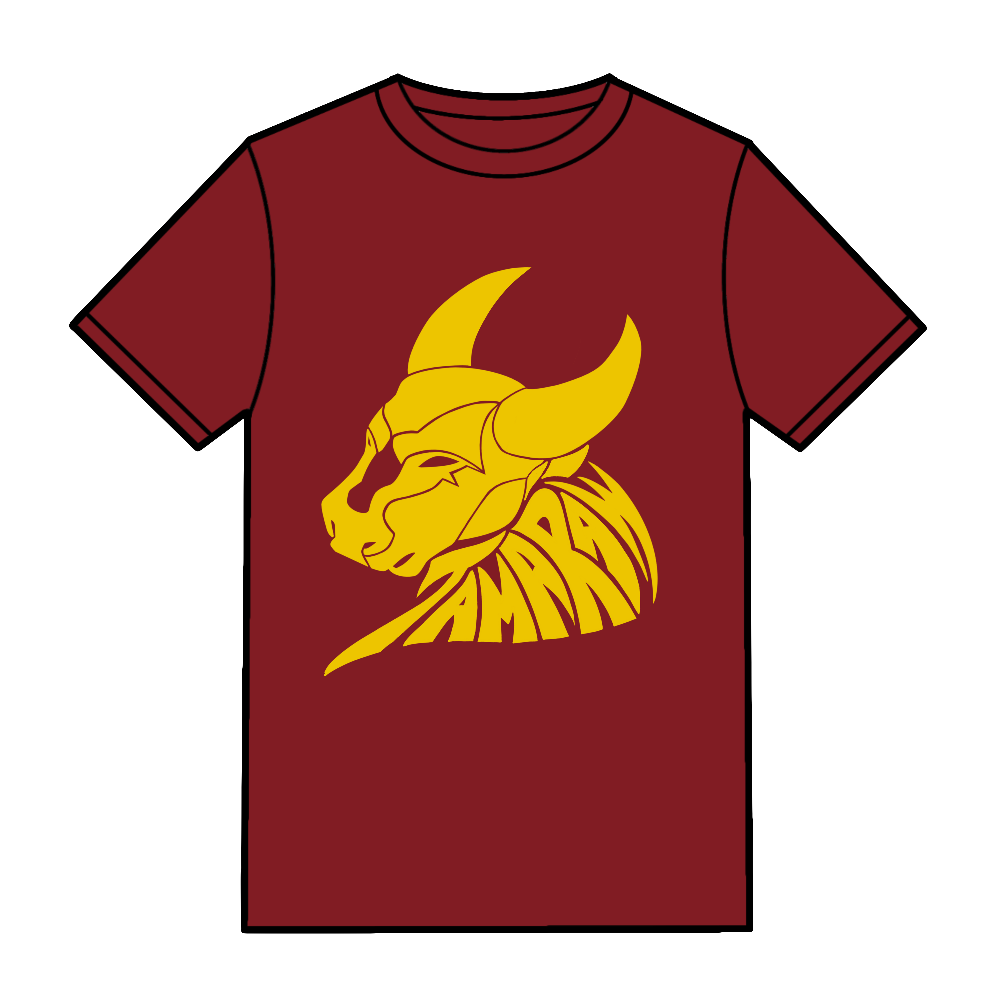

Unfollow fear and just say, "You are blocked!"
About Me

I am Ivann Caezar G. Menchero, a Bachelor of Arts in Multimedia Studies student at the University of the Philippines Open University.
As a multidisciplinary artist from Lucena City, Quezon, I have always been passionate about the arts and creation. My works range from traditional to digital pieces, from portrait drawings and landscape paintings to various digital content and design.
Things I Love
- Arts and Crafts
- Film and TV
- K-Pop
- Fashion
Passion Projects
Over the past years, I have established my portfolio as a starting artist. Here are some of the works that I have done throughout those years.

mother earth has arrived
2025
This piece was originally made for a tote bag design contest but was turned into a poster. It adds a touch of aesthetics to environmental awareness.

Mr. and Ms. QSHS Production Design
2023
Serving as the lead production designer, I created the pageant's identity, including the logo, publicity materials, and design elements.

Tamaraw Shirt
2022
Awarded as the best shirt for that year's intramurals, this design embodies the power of a Tamaraw and fighting spirit of the team.